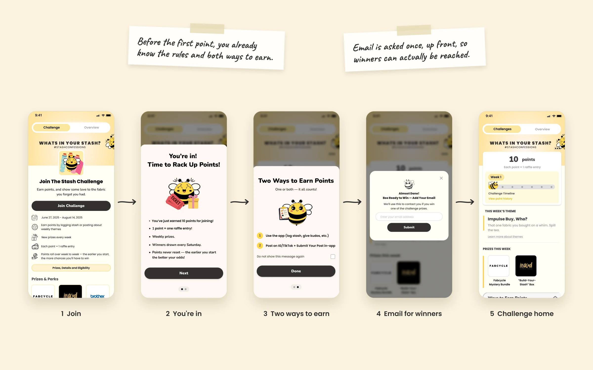
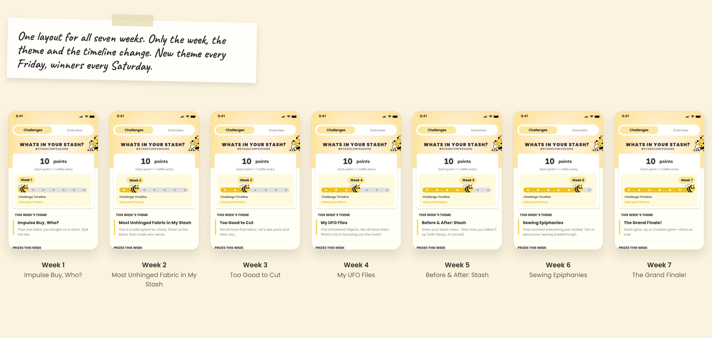
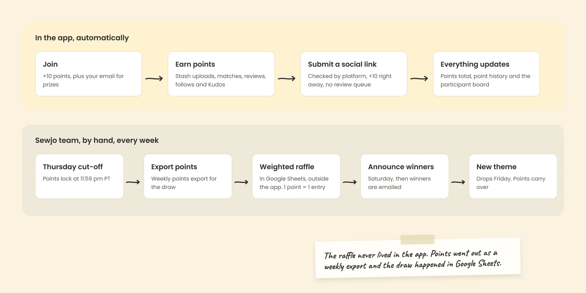
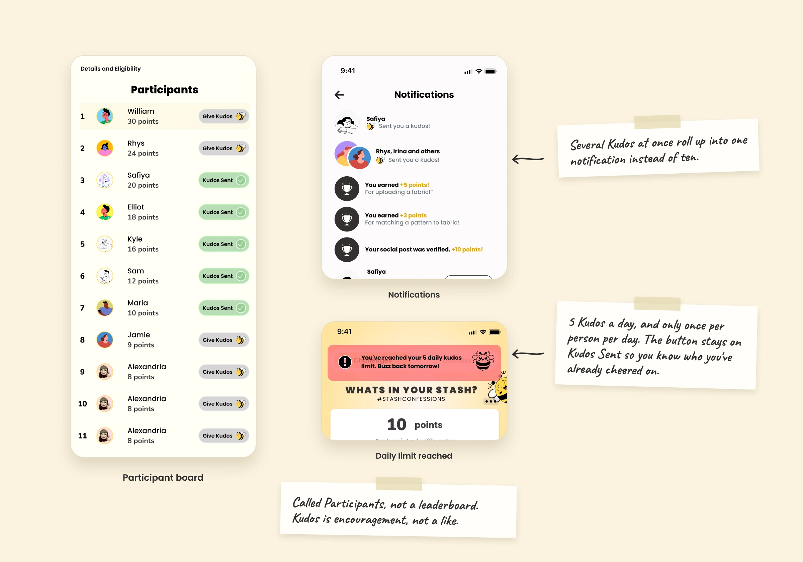
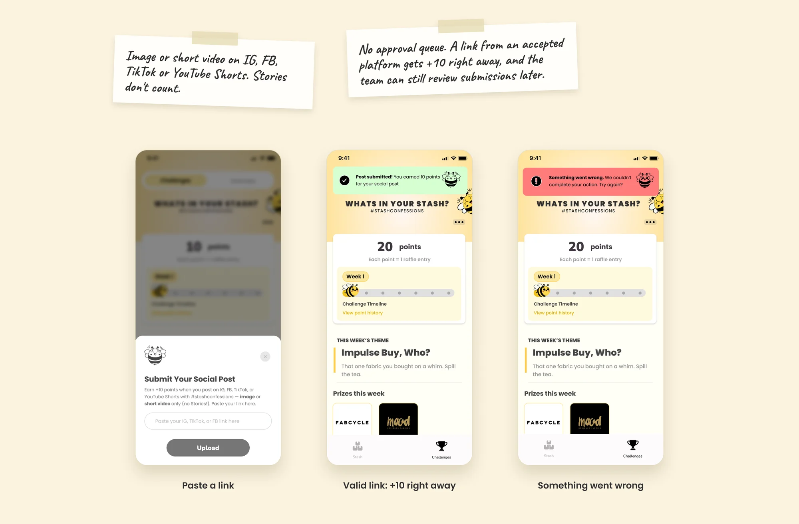
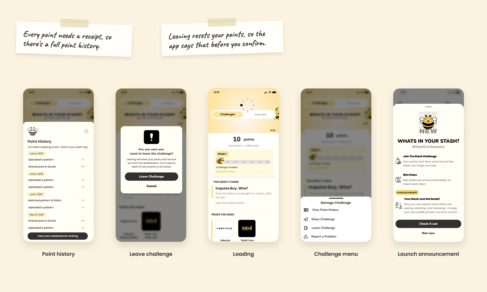

Turning everyday product interactions into reasons to come back

Sewjo Challenges was a gamified engagement experience that encouraged users to explore the app, connect with other sewists, and earn rewards through everyday activities.
Designed around Sewjo's Frocktails launch campaign, the experience connected in-app participation with weekly themes, community recognition, and prize draws.
As the sole product designer on the initiative, I owned the experience from early exploration through launch, working closely with the founder and developer to bring it to life.
- Role
- Lead Product Designer, sole designer
- Team
- Founder, product manager, developer, marketing
- Timeline
- April to August 2025
- Platform
- iOS and Android
The opportunity
Getting people into the app was only half the challenge
In 2025, Sewjo was preparing for its official launch alongside Frocktails, an event bringing the sewing community together online and in person.
We had built features that helped sewists organize materials, document projects, and connect with each other. But having those features available didn't mean people would discover them or use them regularly. Rather than treating the event and in-app engagement as separate efforts, we saw a chance to connect them.
What if taking part in Frocktails also encouraged people to explore Sewjo?
Objective 01
Grow the community
Bring new users into Sewjo through the Frocktails campaign.
Objective 02
Encourage product engagement
Give users reasons to explore existing features and return.
Objective 03
Connect online and offline
Extend the excitement around Frocktails beyond the physical event.
Ideal target: 300+ challenge participants, alongside acquisition and active-user goals.
The strategy
Reward the behaviours we wanted to encourage
Instead of inventing a separate set of tasks, I designed a points-based challenge around things people could already do in Sewjo. Each action supported a different part of the product, so earning points meant exploring the app.

1 point = 1 raffle entry in the weekly prize draw.
Designing for different levels of participation
Not everyone had time to start or finish a sewing project. Rewarding small actions gave people several ways in, whether they had a few minutes to organize their Stash or wanted to share their work. Weekly themes added inspiration without restricting how anyone earned points.
Exploration
Making gamification feel like part of Sewjo
I looked at how products like Duolingo break activities into manageable steps and make progress visible. The challenge was translating those patterns into Sewjo without the experience feeling bolted on.
Finding the right way to show progress
Early concepts used circular points indicators and task cards with progress bars. They made individual goals prominent, but I also needed to show where people were in a campaign that changed every week. The final direction gave these two ideas their own space: points earned, which tracks participation and raffle entries, and a weekly timeline that shows where you are in the campaign.
Participation
Helping people understand how to get involved
Challenges introduced several unfamiliar ideas at once: points, raffle entries, weekly themes, and social submissions. I wanted people to understand how it worked before asking them to start earning. The entry experience answered three questions.
What is this?
A community challenge connected to Frocktails.
How do I take part?
Complete activities in Sewjo, or share campaign content.
What do I get?
Points that count toward weekly prize draws.

The reward system is explained before anyone reaches the main experience, and it's clear that nobody has to do every activity or post on social media to join.
Keeping it fresh across seven weeks
Each week had a new theme, from impulse fabric purchases to unfinished projects. I designed one reusable layout where only the week, theme, description, and timeline change, so there was something new each week without anyone relearning the interface.

Running it
Supporting the team running the campaign
Behind the scenes, the team needed to manage points, social submissions, participant information, and weekly prizes. I designed the admin experience for these workflows and worked with the developer on how the participant side connected to the processes needed to run the campaign.

Collaboration
Turning feedback into a cohesive experience
The developer was involved from the start, helping us work through how the experience would function. The founder reviewed designs as they evolved. As the sole designer, I evaluated that feedback and worked it into the final experience.
Participation rules
How to earn points, and whether social was required.
Participant interactions
Making sure people could reach each other's profiles.
Reward communication
How points related to entries and how prizes were given out.
Visual hierarchy
How information was organized on the Challenge page.
Implementation
Testing the experience as a connected system
The same rules we shaped together had to hold up in the build. Points could be earned across many parts of Sewjo, so during QA I checked that what people saw matched what the system recorded. People were participating for rewards. If the app acknowledged an action but didn't reflect the reward, it could undermine trust in the whole experience.
- Totals: A notification confirmed points were earned, but the total didn't update.
- Rankings: Rankings didn't immediately reflect newly earned points.
We also found incorrect activity messages and inconsistent point awards for some actions. I worked with the developer to identify and communicate each issue.
Impact
538 people joined the challenge
- 538 Challenge participants
- +79% Above the ideal target of 300 participants
- 10,221 App downloads by August 2025 across the whole Frocktails campaign
Downloads reflect the combined work of product, marketing, partnerships, and the event itself. Daily, weekly, and monthly active users also trended upward during the campaign. Challenges gave people an in-app reason to explore features and take part in the community. The feature was built for Frocktails and paused after the campaign ended.
What this taught me
What this taught me
The points were simple. Everything around them wasn't: how people learned the rules, understood their progress, got feedback, and trusted their actions were counted. The supporting states, admin workflows, and QA mattered as much as the main screen.
 Next projectMaking project tracking feel effortless
Next projectMaking project tracking feel effortless
Social and system
Recognition mattered as much as rewards
I designed a participant board where people could see each other, visit profiles, and give Kudos. Kudos let someone recognize another person's work while adding to their points, which brought a supportive interaction into an otherwise competitive experience.
Designing the Kudos interaction
People could only give Kudos so often, so each state explains what just happened and why an action might not be available.

Every reward needed a clear explanation
A total on the main screen couldn't explain every activity behind it, so I designed a points history and the supporting states around it. If people couldn't see where their points came from, they had little reason to trust the total. For consequential actions like leaving a challenge, the confirmation explains the impact first.

